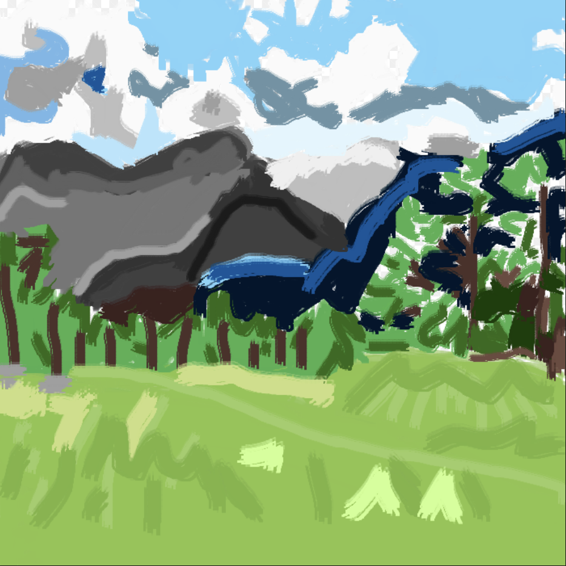
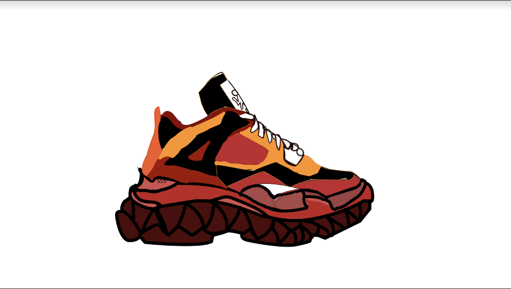

This piece represented the state of the world at the moment due to the reign of Covid and it's affects on the planet.
This was an album cover redesign for Lil Uzi Vert's album. It was originally a Scott Pilgrim image but I edited it.

I made this project by using the shape tools, and perspective grid tool. and pen tools. I added spongebob houses from the original show. I included stop signs too. The hardest part was all the spongebob houses because they were curvy. The easiest part was the streets.

This was originally a mountain scape, but I changed it by drawing over it with a paintbrush and stuff.
I made this project with the blob brush tool. I made it with the pen tool too. I based it off the Jordan 4 and Balenciaga Triple S sneaker. I would wear it.
I made this project only using illustrator. Inside of Illustrator, I used the pen tool. The elements I included were many from the BLM movement and the death of George Floyd, such as: Police Officers, George Floyd, Police Dogs, Police Cars and a sun in the b background. I choose to make the story about police brutality and how a police officer was killing a black man.